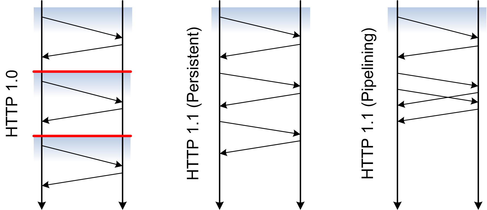

Hypertext Transfer Protocol (HTTP)
(37) DNS & HTTP
The two basic protocols which every Web browser must implement are DNS access and HTTP. However, most operating systems provide an API for DNS access, so the browser can
use this service locally and only has to implement HTTP. TCP support (which is required as the foundation for HTTP) is usually provided by the
operating system.

(38) HTTP Messages
- HTTP needs a reliable connection
- The foundation for HTTP is TCP
- DNS resolution yields an IP address
- Open TCP connection to port 80 or port specified in URI (
http://rosetta.sims.berkeley.edu:8085/)
- HTTP is a text-based protocol
- The connection is used to transmit text messages
- All HTTP messages are human-readable (not all entities, though)
- Basic HTTP operations can be carried out by hand (e.g., per
telnet)
start-line
message-header *
message-body ?
(40) HTTP Requests
- After opening a connection, the client sends a request
- The method indicates the action to be performed on the resource
- HTTP's most interesting methods are:
GET, POST, PUT, and DELETE
- The URI identifies the resource to which the request should be applied
- Absolute URIs are required when contacting proxies
- Absolute paths are required when contacting a server directly
- The URI may contain query information
- The
Host header field must be included in every HTTP/1.1 request
Method Request-URI HTTP/Major.Minor
[Header]*
[Entity]?
(41) HTTP GET
- Retrieval action based on the URI
- Possibly implemented by reading a file
- Possibly implemented by processing a file (PHP)
- Possibly implemented by running code
- Semantics may change based on header fields
If-*: only reply with the entity if necessary
Range: only reply with the requested part of the entity
- Cacheability depends on header fields of the response
GET / HTTP/1.1
Host: ischool.berkeley.edu
(42) HTTP Responses
- The server's response to acting on a request
- the status code is given numerically and as text
2** for variations of ok
3** for redirections
4** are different client side problems (404: not found)
5** are different server side problems
- Header fields specify additional information
- Information about the server
- Information about the entity (media type, encoding, language)
HTTP/Major.Minor Status-Code Text
[Header]*
[Entity]?
(44) HTTP Connection Handling

(45) HTTP Access Control
- HTTP servers can [http://en.wikipedia.org/wiki/List_of_HTTP_status_codes#4xx_Client_Error] because of access control
401 Unauthorized means the resource is access controlled
403 Forbidden means the resource is inaccessible
405 Method Not Allowed signals a request using the wrong request method [HTTP Requests (1)]
- Two different approaches to unauthorized access are possible
- Repeat the HTTP request with the proper authentication credentials
- Redirect to a
authentication resource
for authentication
(46) HTTP Authentication

(47) Basic HTTP Authentication
- Authentication is based on authentication realms
- A set of resources for which the authentication is required
- An opaque name which is used to signal which login is required
- Username/password often is specific for a given realm
- Users supply username and password through the client
- Sent as [http://en.wikipedia.org/wiki/Base64] encoded
username:password
string
- Username and password are [http://www.google.com/search?hl=en&q=base64+decoder]
- Basic authentication should always use HTTPS
- Authorization is handled on the server side [http://en.wikipedia.org/wiki/Basic_access_authentication] [http://en.wikipedia.org/wiki/Basic_access_authentication]
(48) Repeated Access
- Clients typically access more than one protected resource
- A perfectly stateless client would always request authentication from the user
- Using the realm clients can identify repeated accesses to sets of resources
- Web interactions by default are perfectly stateless
- Each request is completely independent from other requests
- Stateless interactions make the Web loosely coupled and scalable
- Concepts like the realm or cookies introduce
state
- Clients remember the authentication and replay it automatically
- Browsers provide little control over this feature
Logging out
of HTTP authenticated sessions is hard
(49) HTTP/2
- Started with the goal of improving browser efficiency (i.e., no API focus)
- Spearheaded by Google with its [https://en.wikipedia.org/wiki/SPDY] approach for Chrome/Google connectivity
- Maintaining compatibility with HTTP/1.1 as much as possible
- Reuse the existing set of [http://webconcepts.info/concepts/http-method/], [http://webconcepts.info/concepts/http-status-code/], and most [http://webconcepts.info/concepts/http-header/]
- Allow peers to negotiate use of HTTP/1.1 and HTTP/2.0
- Advanced features for more efficient transmission and communications
- Headers can be compressed and repeated efficiently (binary transmission)
- Fully multiplexed avoiding blocking and other inefficiencies from ordered pipelining
- Server push allows servers to send resources prior to getting requests
- Quick uptake through [https://en.wikipedia.org/wiki/Comparison_of_web_browsers#Protocol_support] and [https://github.com/http2/http2-spec/wiki/Implementations]

")